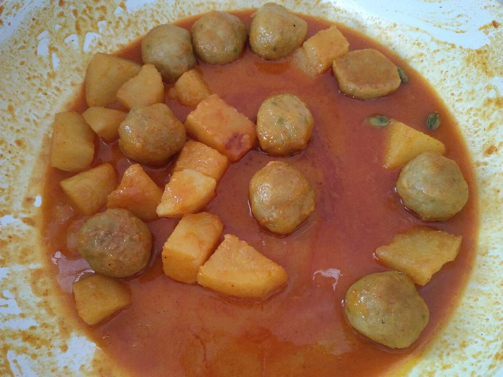

Chitol Macher Muitha
clown knifefish scraped from the bone, rolled into dumplings and simmered in gravy

Contains: fish, mustard
Ingredients
Quantities for 4.
- 600g, flesh scraped from the bone Fishchitol is traditional; any firm white fish scraped fine will hold
- 1, boiled and mashed Potatothe binder
- 2, one grated and one sliced Onion
- 2 tbsp paste Ginger
- 1 tbsp paste Garlic
- 1.5 tsp Turmeric
- 1.5 tsp Cumin Powder
- 1 tsp Coriander Powder
- 1 tsp Chilli Powder
- 1 tsp Garam Masala
- 2 Bay Leaf
- 6 tbsp Mustard Oil
- to taste Salt
Cookware
stovetop
Checked against the ingredient list for ten allergens: milk, egg, fish, crustaceans, tree nuts, peanuts, sesame, mustard, soy and gluten. Brands vary, so read the label on anything new to you.
Before you start
- Muitha means a fistful. The paste is squeezed in the hand to shape it, which is where the name comes from.
- The dumplings are boiled first, then fried, then simmered. All three steps matter.
Method
- Mix the scraped fish with the mashed potato, grated onion, half the ginger, turmeric and salt into a stiff paste.
- Squeeze fistfuls into rough dumplings and drop into simmering salted water for 8 minutes until they float.
- Lift out, cool slightly and fry in the mustard oil until browned on all sides. Set aside.Boiling first is what stops them disintegrating in the gravy.
- In the same oil, temper the bay leaves, fry the sliced onion until brown, then add the remaining ginger, garlic and the ground spices with a splash of water.
- Cook until the oil separates, add 400ml water and bring to a boil.
- Slide the dumplings back in and simmer 10 minutes. Finish with garam masala.
Safe temperatures: Fish is done at 63°C / 145°F, or when it turns opaque and flakes easily. Reheat leftovers to 74°C / 165°F. FoodSafety.gov
Storage
Keeps 2 days refrigerated and the dumplings firm up, which is no bad thing. Reheat gently so they stay whole.
Nutrition Medium estimate
High protein: 33 g a serving, 31% of the calories
| Per serving284 g | Per 100 g | |
|---|---|---|
| Calories | 424 kcal | 150 kcal |
| Protein | 32.9 g | 12 g |
| Carbohydrate | 17.5 g | 6 g |
| of which sugars | 3.0 g | 1 g |
| Fibre | 3.1 g | 1 g |
| Fat | 24.9 g | 9 g |
| of which saturated | 3.1 g | 1 g |
| of which unsaturated | 19.3 g | 7 g |
Ingredients given to taste count as zero, so the real figures run a little higher. Nearest database match used for garam masala. Estimated from raw ingredients using USDA FoodData Central.
More like this: Gluten-free Indian recipes · Dairy-free Indian recipes · Bengali recipes
Times, yields, allergens and nutrition are guidance. Use your own judgement on doneness and on storing. More in About.